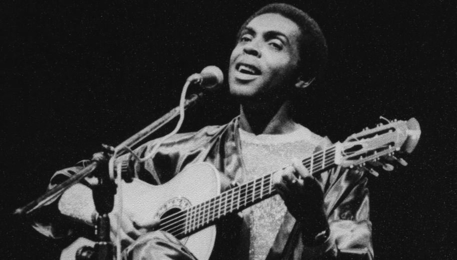
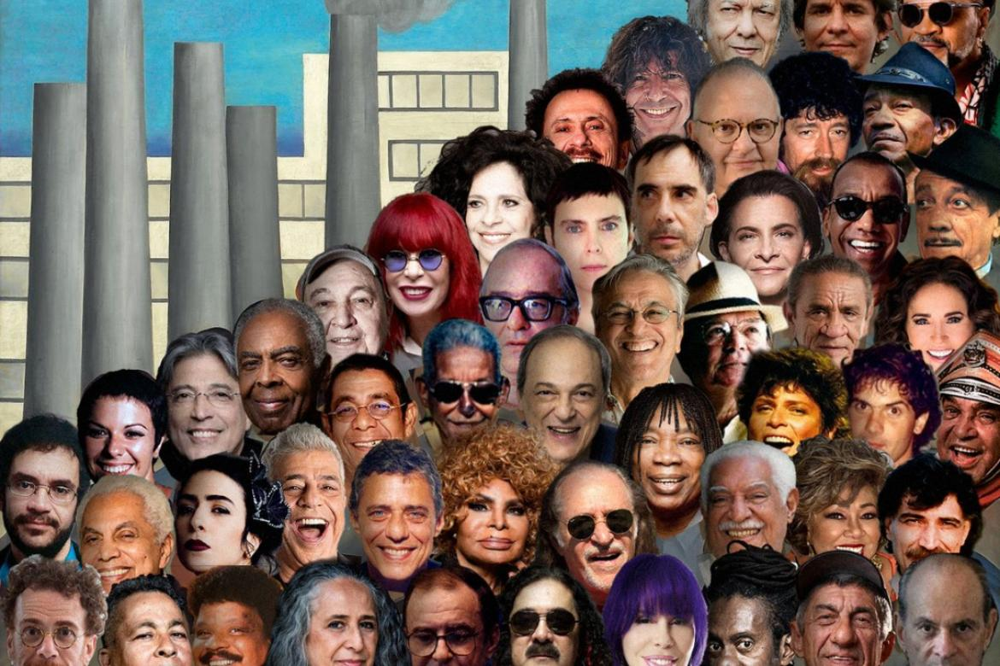

Como surgiu o MPB
A Música Popular Brasileira (MPB) surgiu na década de 1960, durante a Ditadura Militar no Brasil, como uma resposta à Bossa Nova e ao contexto político da época. A MPB uniu ritmos e movimentos musicais já existentes no país, como o samba, o choro e a própria Bossa Nova, com uma nova abordagem mais engajada socialmente e politicamente.

A Música Popular Brasileira (MPB) desempenha um papel cultural fundamental, sendo considerada não apenas um gênero musical, mas também um reflexo da identidade, história e lutas do Brasil. Surgida na década de 1960, a MPB misturou diversos ritmos e influências, tornando-se uma voz de resistência durante a ditadura militar e um veículo para a expressão cultural e social.
Importância Cultural

Diversidade de Ritmos e Artistas
A MPB se caracterizou pela diversidade de ritmos e estilos musicais, como samba, bossa nova, baião, frevo, entre outros, e pela variedade de artistas que surgiram nesse período, como Elis Regina, Chico Buarque, Caetano Veloso, Gilberto Gil, Milton Nascimento, e muitos outros.